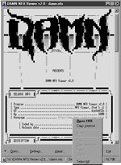
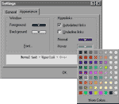

DAMN NFO Viewer is an utility for viewing text files containing ASCII Art (e.g. nfo files), and it proved itself to be handy =) So... if you don't like the way ASCII Art looks like in notepad (I bet you don't), or tired of starting some DOS-kind file manager each time you need to view nfo file, or just ain't too happy with the viewer you use - give this one a try.
Double-click .nfo or .diz file in explorer to view it.
When this option is turned on, hyperlinks get autohighlighted. You can specify colors to use for hyperlinks, hovered hyperlinks (that is, when mouse pointer is over it), and turn underlined hyperlinks on. There're 3 possible ways to open a hyperlink:
Provides you with quick access to recently viewed files and may contain up to 9 entries.
You can specify whether you want only one instance of the program to be allowed to run (new files will be opened in the same window).
You know what does it mean if you use mIRC =) For those who don't, text is copied to clipboard right after you've selected it and released your mouse button.
Just drop your file in the viewer to open it.
Look inside of 'history.txt' for changes in older versions.
Bug reports, comments and suggestions are welcome.
NOTE: This program is compiled with dynamic version of MFC (that is, it needs mfc42.dll to run), so if you get something like 'routine blah blah cannot be located in mfc42.dll' (99% that you WON'T get this error, though) - your mfc42.dll is outdated and you should think about upgrading it.
| SCREENSHOTS | |
|  |  |
| main window | settings dialog |
| main || news || release list || software || crypto || forums || links || fga || email |
| © 2000 Ivanopulo None of the materials from this site may be reproduced without prior consent of the copyright owner. |
| privacy statement |